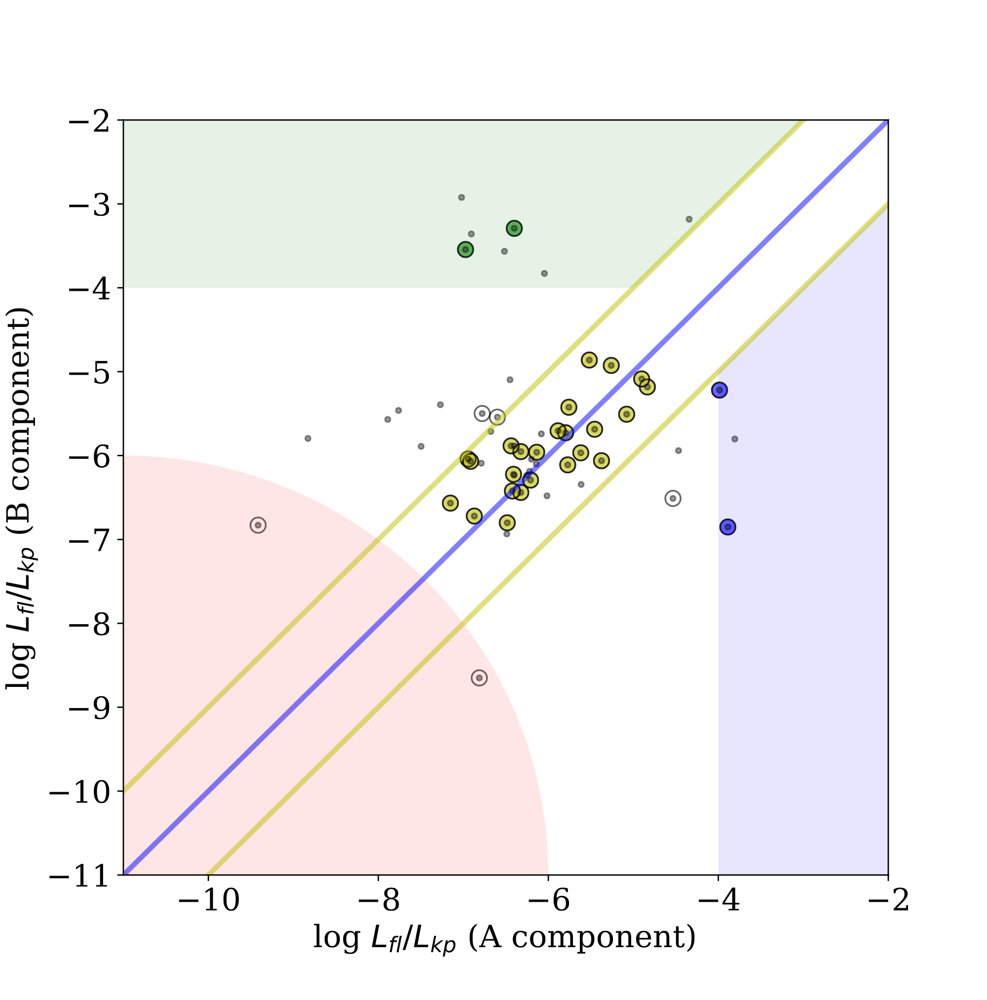
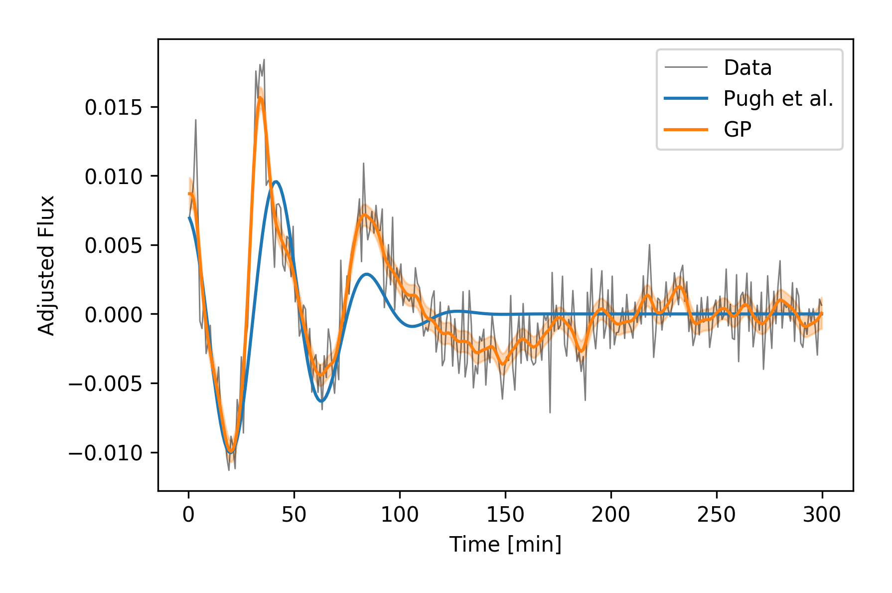

My Research Interests
My research in general involves using large databases of stars for stellar age-activity-rotation studies. While my work up to date has used data from the NASA Kepler mission, I look forward to groundbreaking instruments such as JWST and TESS.
Projects I am working on:
1. Flares on Wide Binary Stars
Widely separated binary stars offer a unique coeval laboratory in which to conduct age-activity-rotation studies. While previous studies have compared activity tracers such as H-alpha and X-ray between wide binary companions, this projects compares relative flare luminosity between previously identified wide binaries in the Kepler field.
The figure below compares relative flare luminosity for 58 wide binaries with detected flare activity. While most pairs lie along the expected relationship for coeval, equal-mass stars, others do not. The area between the yellow lines contains pairs whose difference in flare luminosity may plausibly be explained by a solar-like activity cycle. The green region contains pairs where the secondary star is significantly more active, while the blue region contains pairs where the primary is more active. The red region denotes the minimum flare detection threshold, below which flare signals are indistinguishable from noise. Circled points are pairs with q ≥ 0.8, uncircled points are pairs with q < 0.8
The source code for this project can be found here.
2. Modelling Quasi-Periodic Pulsations in Stellar Flares with Gaussian Processes
A Gaussian process is a type of statistical model for continuous-domain, stochastic data (like flares!). The process uses a "kernel" function to predict a new value from training data.
QPPs are oscillations seen in white-light stellar flare decay phases. Pugh et al. (2016) found 56 flares with QPP-like signatures out of 1439 flares on 216 stars in the Kepler field. The figure below shows a decay-subtracted flare on KIC 12156549. The least-squares fit from Pugh et al. 2016 found a period of 44.6±0.6, while the GP fit found a period of 33.15±0.32.
This project uses Celerite, a scalable method for Gaussian Process regression created by Daniel Foreman-Mackey.
The source code for this project can be found here.